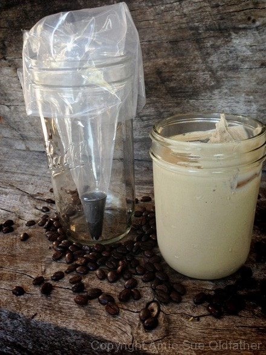
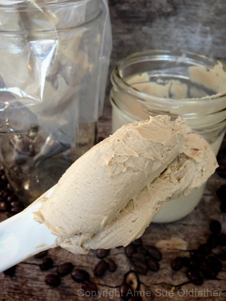
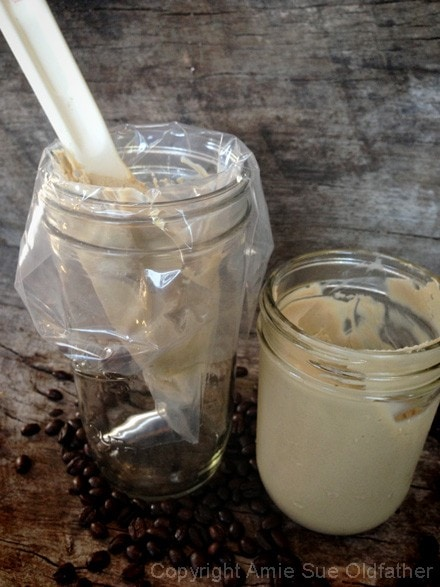
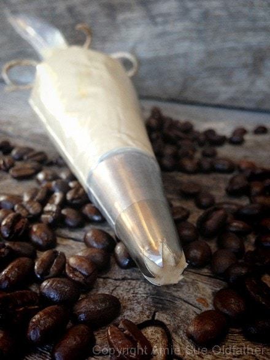
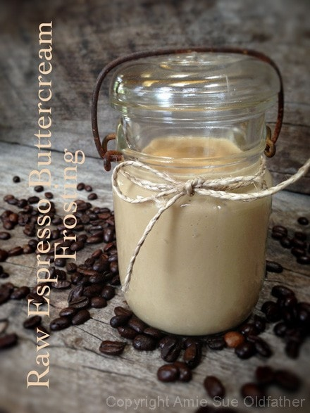

Espresso Buttercream Frosting
 ~ raw, vegan, gluten-free ~
~ raw, vegan, gluten-free ~
This frosting is so creamy and velvety smooth, and I just love it! Fantastic for piping or just frosting a cake. When you first make this frosting, it will be liquidy, so be sure to place it in the fridge to firm up before using it. It will go from a liquid state to a very firm state over time, so you will have to pay attention and take it out when it reaches the proper consistency.
It will hold up to room temperature for a decent amount of time but if left out for too long, or if the room air is very warm, it will over-soften. If that happens, just place it in the fridge for a little bit, and it will firm back up. I have always loved flavored coffee treats, and this frosting definitely plays into that love affair. If you are not able to have caffeine, you can use coffee flavoring as a substitute.
To help you understand the roles of the ingredients used, I want to take a moment to explain them.
Soaked Cashews
- Soaking the cashews is key (!) and this step should never be skipped.
- Soaking causes the cashews to swell, giving a bit more volume for the money and it softens them which is vital to creating a creamy texture.
Coconut Milk
- Whether you use fresh young Thai coconuts or canned full fat coconut milk, this ingredient helps give body, creaminess, and a hint of coconut undertone.
- It is a healthy fat that also acts as an emulsifier, bringing the recipe together.
- If you can’t find young Thai coconuts, you can use canned, but do your homework. Aim for organic, BPA free, and free of other ingredients.
Maple Syrup
- I used maple syrup because it is more alkalizing for the body than most other liquid sweeteners.
- You can use raw agave, coconut syrup, or any other liquid sweetener that you like to use.
Vanilla & Salt
- The role of vanilla in sweet goods is like the role of salt on the savory side: it enhances all the other flavors in the recipe.
- You can use vanilla bean (seeds only), powdered vanilla, or vanilla paste.
- Salt ~ I use sea salt in just about all of my sweet desserts. It elevates the sweet level.
- It is a healthy fat that gives frosting to the overall body.
- Once chilled below 76 degrees it firms up, making this frosting perfect for decorating.
Sunflower Lecithin
- This ingredient plays several roles and is great support for all the other ingredients in this recipe.
- It is an emulsifier and thickener. As I said before, when first making this frosting, it will be very runny. Place in the fridge to chill and firm up. You can take it out at any time, depending on the consistency that you want for your dessert.
- If left at room temperature for an extended period of time, it will start to soften to the point that it will lose its structure. Enjoy and have fun!
Instant Espresso Powder
- Espresso powder is very intensely dark and concentrated instant coffee. It’s not just coffee beans ground fine.
- It’s actually coffee crystals that dissolve quickly in liquid. It’s also different from plain old instant coffee in that it’s much more concentrated. Espresso grounds are darkly roasted coffee, ground very fine for the espresso extraction.
I used instant espresso which has a better, darker flavor than the typical store-bought instant coffee. By adding just a teaspoon to a recipe, it will give it a darker, richer flavor to your chocolate recipes but you won’t detect the coffee flavor. Once you start using more than a teaspoon, the coffee flavor will start to make its presence known.
Since this recipe is all about the espresso flavor, I wanted to explain the differences in using different coffee products in recipes. Since I never grew up as a coffee drinker, I had to explore this world a bit to understand these differences. The ones that I talk about below can be used as a substitute for instant espresso powder if need be. I haven’t tested them with this recipe but in a pinch, we all experiment, don’t we. :)
- Instant coffee (dark roast) – Instant coffee isn’t as rich as espresso, so you may need to increase the amount called for in a recipe. If you use too much, it can taste bitter, tinny, or sour, so start with less and work up as needed.
- Brewed espresso – Using liquid espresso may require adjusting the other ingredients in your recipe.
- Coffee Flavoring – This is a thick concentrated syrup that requires measurement of increments of teaspoons. Frontier makes an organic version and is made of; Glycerin, water, natural flavors, alcohol. With other natural flavors.
 Ingredients:
Ingredients:
Yields 5 cups
Preparation:
- After soaking the cashews, drain and rinse them well. Set aside.
- In a high-speed blender combine in order; coconut milk, maple syrup, vanilla, salt, and cashews. By placing the liquids in first, it helps the blades spin more easily. Blend until creamy and don’t feel any grit in the frosting. Depending on the blender, this may take anywhere from 1-5 minutes.
- While the blender is running and a vortex is in motion, drizzle in the coconut oil. Make sure that it gets well incorporated.
- Now add the lecithin and process just until mixed in.
- Place the frosting in an airtight container and place in the fridge for 2-4 hours to firm.
- This will keep for 3-5 days.
Additional Cake Tips:
- How to frost a cake. Click here.
- How to slice a cake. Click here.
- How much frosting is needed for a cake? Click here.
- For Cake Frosting Tools, click here.
If you are new to using piping bags, I wanted to show you an easy way to
get the frosting into the bag without wearing it. :)
Fit the piping bag with the desired piping tip, slide the bag down into a glass
or jar as shown below.

Scoop out some frosting with a spatula or a utensil with a straight edge.
The straight edge will allow you to clean the frosting off of it on the side of
the container, assuming it goes into the bag.

Don’t try to transfer the whole jar of frosting into the bag at once. Get the
frosting as deep into the bag as you can without disturbing the sides.

Once the bag is half full, remove it and twist is shut. Work out any air bubbles
before you start piping. Air bubbles will disrupt the look of your piping. I mentioned
to only fill your bag about half full, that way it will be easier to handle
while you are piping. You don’t want it to be so full that the
frosting is also escaping from the other end and you find a blob has fallen
onto your shoe… but then this frosting is so good, and it would make even a flip-flop
taste amazing. hehe


© AmieSue.com